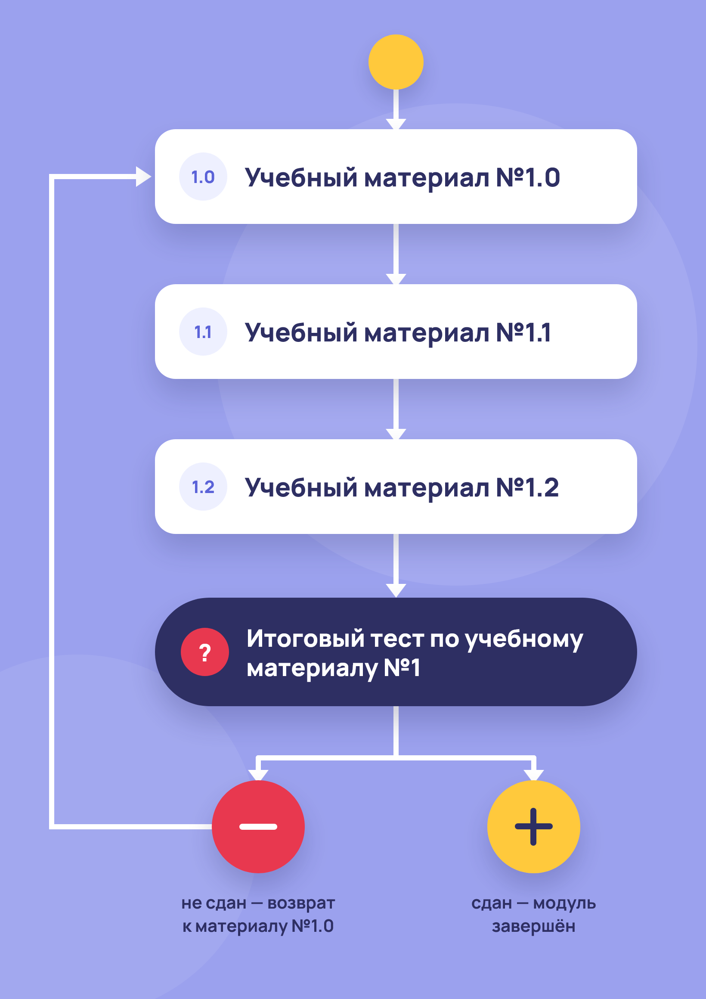

1. Конструктор адаптивного онбординга
Курс хранится как граф: родительские карточки открыты сразу, дочерние - после прохождения предков. Несколько тем могут сливаться в одну, часть веток можно пропустить через аттестацию, а при провале промежуточного теста - назначить повторное прохождение ветви. Сотрудник видит всю структуру курса и выбирает порядок изучения равнозначных тем самостоятельно.